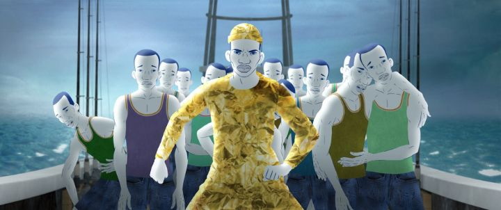

Disclaimer: Minor spoilers.With venues as experimental as a film festival, it's possible to leave without a single winner amongst them. But pleasant surprises can also come from it. At the 2022 edition of the Ottawwa International Animation Festival, the movie I had the most fun watching was undoubtably "The Island," based on a stage play by the film's writers. It's directed by Anca Damian, which I later found had last directed "Marona's Fantastic Tale," a movie I didn't particularly care for, and this is an overall improvement. The synopsis explains that the story is loosely based on the classic Robinson Crusoe, where a Western man gets marooned on an island and manages to survive and thrive there. It helps to know the original story, but to simplify it to just that does the movie a disservice. It's actually a opera-style musical, where everyone speaks in lyrical rhyme, frequently repeating certain lines throughout the film. It's also updated to be set in the modern era (I think), with a more psychadelic and abstract perspective from Crusoe, perhaps because he's perpetually drugged or has gone mad, or the early onset of dimentia. In this story, he's a skinny old man in his 70's, living alone on an island on the other side of a garbage dump. Friday shows up after a shipwreck, and speaks a lot (despite the winking humour from Crusoe singing of how he never says a word). There's a mermaid, that then takes the shape of a woman and co-worker. About halfway through, Crusoe's mother appears (looking half the age of him), and asking for his help to convince her own mother to accept her relationship with a retired pirate. There are hints of it from the beginning, but by the end, the movie makes things a little more clear. The story is a long allegory for illegal immigrants treated like cargo by boat, of which Friday is one, and ends with him returning to his kin to protect them on their journey to safe lands. Crusoe is a doctor of a poor hospital, and has probably seen more unnecessary death than anyone should from the immigrants coming through. The mermaid is one of Crusoe's co-workers, and grows to love Friday, to Crusoue's grief and continued lonlieness. This isn't necessarily the most effective story I've seen to tackle the theme, but it adds extra meaning to the movie, and the journey to get there is interesting enough along the way.  Regarding that journey... I was delighted in the optimistic and colourful humour, but it won't be for everyone. Crusoe seems to speak in riddles, spoutting lines like "I'm hungry... I'm dreaming when I'm hungry...," or begging to far-off mermaid to "stay with me" in exchange for him to teach her poetry. He's crippled by lonlieness, but also seems to appreciate the simplicity of it, and perhaps lives alone out of necessity. He hallucinates things by viewing the world through his iPad tablet, not noticing that they don't appear in the real world. It can be confusing, and because of the style of dialogue, quite repetitive. I thought it was clever and charming, but others might find it boring. And Crusoe's bizzare behaviour and outlook is never fully explained... I prefer the theory that it's his old mind starting to fall apart, and if so, he appears to remain quite happy as it does, an optimistic change of pace from the inside compared to how one might view him from the outside. The animation style caught me by surprise, using 2D animation for the characters, and a variety of mediums and styles for the worlds the explore. Always colourful and imaginative, it's sometimes remarkably beautiful, but sometimes comes across as a little cheap - an overall decent effort for a small indie studio. The dialogue is all spoken in English, by actors where English probably isn't their first language, but that again adds to the charm. Context matters, of course, and I think my enjoyment of "The Island" was for its refreshing appeal compared to the dull or dark features I happened to watch that week. It's a little too experimental for its own good, and not all of the visuals or story scenes land. But it's a curious experiment nonetheless, and a fun example of how you can take an existing story and flip it upside down.
- "Ani" More reviews can be found at : https://2danicritic.github.io/ Previous review: review_The_Illusionist Next review: review_The_Jungle_Book